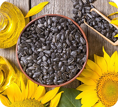

Semente de Girassol
As sementes de girassol são amplamente conhecidas pelo seu valor nutricional e pelo papel ecológico dessa flor radiante. Além de servirem como alimento saudável, também são essenciais para a produção de óleo vegetal e contribuem para a polinização e a biodiversidade.
O girassol é uma planta rústica e de fácil cultivo, adaptando-se bem a solos férteis e locais com boa exposição solar. Suas sementes são ricas em gorduras boas, proteínas e minerais, sendo muito utilizadas na alimentação humana e animal.
← Voltar para HubsBenefícios e Malefícios
Benefícios
- Rica em vitamina E e gorduras saudáveis que auxiliam na saúde do coração.
- Fonte de proteína vegetal e minerais como magnésio e selênio.
- Excelente opção de lanche natural e energético.
- Ajuda na regeneração do solo e atrai polinizadores.
Malefícios
- O consumo excessivo pode aumentar a ingestão calórica devido ao alto teor de gordura.
- Em solos pobres, pode apresentar crescimento reduzido e baixa produtividade.
- O óleo extraído pode oxidar facilmente se não armazenado corretamente.